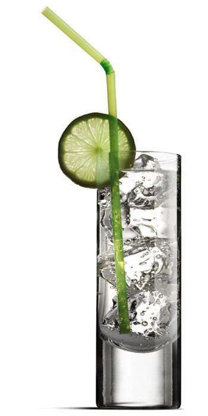

I'm Gonna Make You
Stop Hating CSS
(a talk by @AhoyLemon)
I'm Gonna Make You
Stop Hating CSS
(a talk by @AhoyLemon)
I'm Gonna Make You
Stop Hating CSS
(a talk by @AhoyLemon)
Hi!
My name is Lemon.
(I make websites.)
I work at
Front End Lead
- Mentoring
- Shepherding
- Documenting
I am a serious professional.I am a serious professional.


CSS is easy
?
No.
CSS IS GREAT

Today's agenda:
- Things that are weird
- Things that are great
- Things you can try now
Let's get weird!
Lyrics:
"Hocus Pocus" by Focus
Yodeadodoyodeadodoyodeadodoyodeadodo
yodeadodoyodeadodoyo-bab-baaaaa
Ahhhhhh-aaahhhh-aaaaaa-aaaaAAA!
Ohhhhhh-ooohhh-oooooo-oooOOO!
Yodeadodoyodeadodoyodeadodoyodeadodo
yodeadodoyodeadodoyo-bab-baaaaa
Ahhhhhh-aaahhhh-aaaaaa-aaaaAAA!
Ohhhhhh-ooohhh-oooooo-oooOOO!
umdub-adaoh-segel-ungucur-ungetu-hungetur-hupreyu
undubea-unpedurl-humpelilly-luptodoro-licktetor-ulumpadero
umbader-lickatine-lupator-lackatera
batickatheplalera
theblumpalumpadera
ho?
ho ho ha haaaa!
Yodeadodoyodeadodoyodeadodoyodeadodo
yodeadodoyodeadodoyo-bab-baaaaa
Ahhhhhh-aaahhhh-aaaaaa-aaaaAAA!
Ohhhhhh-ooohhh-oooooo-oooOOO!
Bom bom bom bom
Bom bom bom
Bom bom bom bom bom bom bom
Bom bom bom
Bom bom bom
Bom bom bom bom bom bom
Bac bac bac bac bac backaaaaa!
Yeeeeha!
ba um um um um um
ba um um um um um
ba oooohhboooobooboboboooo!
Yodeadodoyodeadodoyodeadodoyodeadodo
yodeadodoyodeadodoyo-bab-baaaaa
Ahhhhhh-aaahhhh-aaaaaa-aaaaAAA!
Ohhhhhh-ooohhh-oooooo-oooOOO!
Yeaah! Whoooo!overflow
CSS
.box {
border:0.1em solid white;
width: 4em;
padding:0.3em;
}
HTML
CSS IS AWESOME
CSS IS AWESOME
overflow:hidden;
CSS IS AWESOME
overflow-y:hidden;
CSS IS AWESOME
word-break:break-word;
CSS IS AWESOME
text-overflow:ellipsis;
CSS IS AWESOME
CSS
.box {
border: 0.1em solid white;
width: 4em;
padding: 0.3em;
margin-right: auto;
}
CSS IS AWESOME
position
position: relative
absolute
fixed
sticky
static
postion:relative
postion:fixed
postion:sticky
postion:static
all five
- fixed
- stapled to a fixed position on your screen
- absolute
- stapled to a position in the nearest restictive parent
- sticky
- NEW(ish)! Toggles between relative and fixed, depending.
- relative
- Follows page flow & provides a restrictive parent
- static
- same as relative, but less helpful
| relative | static | |
|---|---|---|
| z-index | ‚úîÔ∏è | üö´ |
| top, bottom, left, right | ‚úîÔ∏è | üö´ |
| holds absolute | ‚úîÔ∏è | üö´ |
Okay, so why does position:static exist?
* { position:relative; }
float
float
<article>
<img class="float-left" src="..." />
<p>...</p>
<p>...</p>
</article>
when float works
when float doesn't work
WHY!!!???
Can you fix it?
Of course.
.container:after {
content: "";
display: table;
clear: both;
}
when float is fixed
Why does this work?
Okay, so let's make a layout with floats!
CSS
.riker {
float: left;
width: calc(33% - 30px);
margin-left: 15px;
margin-right: 15px;
}
grid
step 1
.all-rikers {
display:grid;
grid-template-columns: repeat(3,1fr);
grid-gap:30px;
}
step 2
288 bytes!
grid-template-columns
grid-template-columns: 1fr 1fr 1fr;
repeat(3, 1fr);
260px 50% 1fr;
repeat(auto-fill,260px);
repeat(auto-fit, minmax(160px,1fr))
1fr = 1 fraction
My gin and tonic:
- 4 ice cubes
- 1 jigger of gin
- tonic water
- 1 lime wheel

grid-template-columns: 1fr 1fr;
grid-template-columns: repeat(4,1fr);
grid-template-columns:200px 1fr 1fr;
grid-template-columns:repeat(auto-fill,240px);
repeat( auto-fill, minmax(250px, 1fr) );
.grid {
grid-template-columns: repeat(4,1fr);
}
.mojito, .daiquiri, .pina-colada {
grid-column: span 2;
grid-row: span 2;
}
HTML...
...
...
...
...
...
...
...
...
...
...
...
css.collins { order: 1; }
.martini { order: 2; }
.tulip { order: 3; }
.margarita { order: 4; }
Can I use grid?
Takeaways:
- IE 10 & 11 (< 2%) has some support (needs prefix & testing)
- No support in IE 9- (Global Use < 0.2%)
- All other lackings in browsers 4+ years behind on updates
Can I use flex?
flex
.all-rikers {
display: flex;
flex-wrap:wrap;
justify-content: space-between;
}
.riker {
flex-basis:calc(33% - 15px);
flex-grow: 0;
flex-shrink:1;
margin-bottom:30px;
}
Flex can be used with or instead of CSS grid
.flex-container {
display: flex;
flex-wrap: wrap;
justify-content: space-between;
}
Vertical Centering with Flex!
.flex-container {
display: flex;
align-items: center;
/* ^- vertical */
justify-content: center;
/* ^- horizontal */
}
The Cascade
- individual rules
- calculated in order
- of increasing specificity
- with id's getting extreme priority
- only beat by inline styles
- and
!importantbeing the nuclear option
HTML
CSS
article p { background: orange; }
#MyParagraph { color:red; }
p { background: green; }
a.link { background:blue; }
a[href] { color:yellow; }
a { background:green; }
CSS Diner

by flukeout
Flexbox Froggy

by Thomas H. Park
Grid Garden

by Thomas H. Park

CSS GIFs by Lynn Fisher
Thank you.